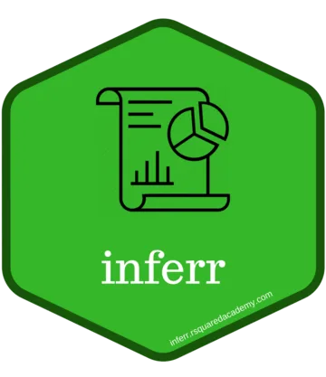
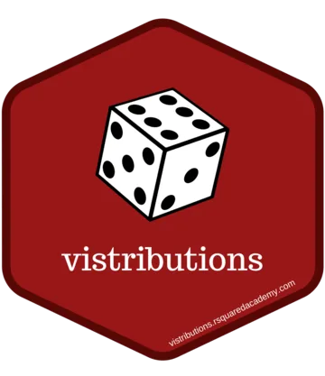

Hey, I am Aravind
statistics, econometrics, and open-source tooling.

I build statistical software that holds up outside a tutorial, and I help teams do the same. My work sits where R, statistics, economics and finance overlap — regression diagnostics, customer segmentation, descriptive and inferential statistics, and the unglamorous plumbing that keeps an analysis reproducible six months later when someone else has to rerun it.
Most of that work is open source. The package portfolio below is used far more widely than I expected when I started writing it, and it is the reason people find their way here: the packages are free, the vignettes are free, and there is no upsell attached to any of it.
I also write. Six data science textbooks are free to read online, and I founded Rsquared Academy, an open-source education platform for data science, where the courses behind those books live.
I earned my postgraduate degree from Madras School of Economics (Anna University), Chennai, and now maintain the portfolio independently from Bengaluru, India.
Explore
Ten actively maintained packages on CRAN, from regression diagnostics to customer segmentation. Reference docs and vignettes for each.
Shiny applications that ship inside the packages and run locally in R. No install, no hosting, no account.
Six open textbooks on R, data wrangling, visualization, SQL and Bash.
Open Source
These packages were written while teaching data science at Rsquared Academy. They are free to use and were shared in the hope that others find them useful for teaching and learning data science with R.
The goal is software which is:
- user friendly
- light weight
- well tested
- well documented
Major bugs get fixed quickly. Feature requests are considered but not promised.

olsrr
Tools for building linear regression models
- Comprehensive Regression Output
- Variable Selection Procedures
- Heteroskedasticity Tests
- Collinearity Diagnostics
- Model Fit Assessment
- Measures of Influence
- Residual Diagnostics

rfm
Tools for RFM analysis
- Generate RFM Scores
- Handles Transaction / Customer Level Data
- Visualization Tools
- Segment Customers
- Includes Shiny App

xplorerr
Tools for interactive data analysis
- Descriptive Statistics
- Inferential Statistics
- Visualize Probability Distributions
- Data Visualization
- RFM Analysis
- Linear Regression
- Logistic Regression

descriptr
Tools for generating descriptive / summary statistics
- Data Screening
- Summary Statistics
- Frequency Tables
- Cross Tables
- Data Visualization

inferr
Tools for inferential statistics
- Binomial Test
- Test of Proportion
- t Test
- Chi Square Test
- Levene’s Test
- Test of Variance
- McNemar Test
- Cochran Q Test
- Runs Test

blorr
Tools for building binary logistic regression models
- Bivariate Analysis
- Model Fit Statistics
- Model Validation
- Variable Selection
- Residual Diagnostics
- Collinearity Diagnostics
- Visualization

vistributions
Tools for visualizing probability distributions
- Binomial Distribution
- Chi Square Distribution
- Normal Distribution
- f Distribution
- t Distribution
- Includes Shiny App

rbin
Tools for binning data
- Manual Binning
- Quantile Binning
- Winsorized Binning
- Equal Length Binning
- Equal Width Binning
- Factor Binning
- Generate Dummy Variables
- Includes RStudio Addins
Also on CRAN: yahoofinancer for Yahoo! Finance data, and standby for managing R processes. nse2r is archived and under revival. Full reference documentation and vignettes: Packages.
Books
Six open textbooks, free to read online. They started as blog posts, grew into tutorials on Rsquared Academy, and were eventually rewritten into short books with the sharp edges filed off.
If you are starting from zero, begin with Introduction to R. More on how these were written: Books.
Teaching
I run Rsquared Academy, where the courses behind the books are taught in full. It is an open-source education platform, not a lead-generation funnel — the course material is written to be useful even if you never sign up for anything.
- For individuals. Self-paced and live courses on R, the tidyverse, visualization, SQL and command-line tooling.
- For teams. Masterclasses built around your own data and problems, run as hands-on sessions rather than lectures.
Consulting & Advisory
Custom package development and architecture. Internal R or Python tooling built to survive handover: documented, tested, and structured so your team can extend it without me. Most consulting work is undocumented code that one person understands, and that is a single point of failure I can help remove.
Team masterclasses. Tidyverse, SQL, command-line tooling. Built around your data, your conventions and your team’s existing stack.
Who this is for: teams shipping quantitative work that other people have to maintain. Who it is not for: one-off analyses, or anyone looking for a pre-packaged answer.
Elsewhere
- Blog — essays on R, statistics and quantitative practice.
- GitHub — package sources, issues and discussions.
- Rsquared Academy — courses and the books above.
- Madras School of Economics — where the statistical training started.